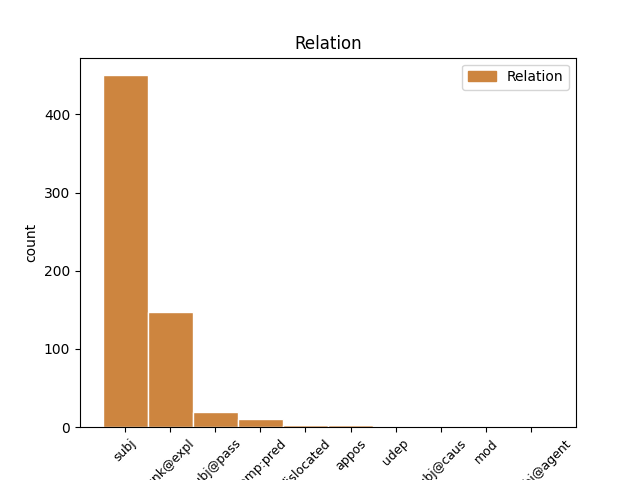
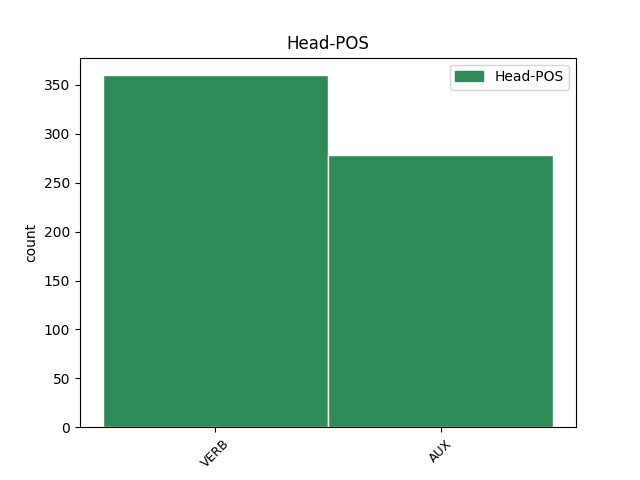
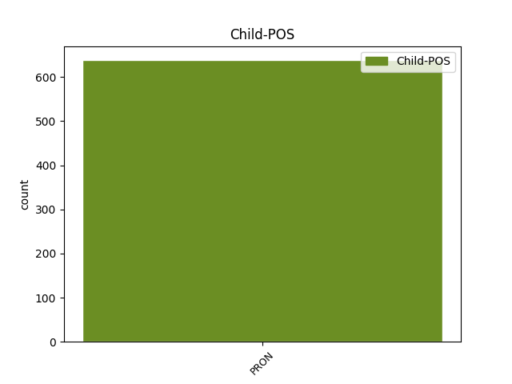

Distribution of features within this leaf



Agreement Rules sorted by frequency.
- When the dependent token is the subject(subj) of the head token, and the dependent token is PRON.
1 Et _ _ _ _ 0 _ _ _
2 je _ _ _ _ 0 _ _ _
3 me _ _ _ _ 0 _ _ _
4 souviens _ _ _ _ 0 _ _ _
5 que _ _ _ _ 0 _ _ _
6 j' _ _ _ _ 0 _ _ _
7 étais _ _ _ _ 0 _ _ _
8 assis _ _ _ _ 0 _ _ _
9 à _ _ _ _ 0 _ _ _
10 mon _ _ _ _ 0 _ _ _
11 bureau _ _ _ _ 0 _ _ _
12 et _ _ _ _ 0 _ _ _
13 je _ _ _ _ 0 _ _ _
14 pensais _ _ _ _ 0 _ _ _
15 , _ _ _ _ 0 _ _ _
16 " _ _ _ _ 0 _ _ _
17 et _ _ _ _ 0 _ _ _
18 bien _ _ _ _ 0 _ _ _
19 , _ _ _ _ 0 _ _ _
20 je je PRON PE Number=Sing|Person=1|PronType=Prs 22 subj _ _
21 le _ _ _ _ 0 _ _ _
22 sais savoir VERB V Mood=Ind|Number=Sing|Person=1|VerbForm=Fin 0 _ _ _
23 " _ _ _ _ 0 _ _ _
24 . _ _ _ _ 0 _ _ _
1 Et _ _ _ _ 0 _ _ _
2 je _ _ _ _ 0 _ _ _
3 me me PRON P Person=1|PronType=Prs 4 unk@expl _ _
4 souviens souvenir VERB V Mood=Ind|Number=Sing|Person=1|Tense=Pres|VerbForm=Fin 0 _ _ _
5 que _ _ _ _ 0 _ _ _
6 j' _ _ _ _ 0 _ _ _
7 étais _ _ _ _ 0 _ _ _
8 assis _ _ _ _ 0 _ _ _
9 à _ _ _ _ 0 _ _ _
10 mon _ _ _ _ 0 _ _ _
11 bureau _ _ _ _ 0 _ _ _
12 et _ _ _ _ 0 _ _ _
13 je _ _ _ _ 0 _ _ _
14 pensais _ _ _ _ 0 _ _ _
15 , _ _ _ _ 0 _ _ _
16 " _ _ _ _ 0 _ _ _
17 et _ _ _ _ 0 _ _ _
18 bien _ _ _ _ 0 _ _ _
19 , _ _ _ _ 0 _ _ _
20 je _ _ _ _ 0 _ _ _
21 le _ _ _ _ 0 _ _ _
22 sais _ _ _ _ 0 _ _ _
23 " _ _ _ _ 0 _ _ _
24 . _ _ _ _ 0 _ _ _
1 Imaginez _ _ _ _ 0 _ _ _
2 que _ _ _ _ 0 _ _ _
3 , _ _ _ _ 0 _ _ _
4 quand _ _ _ _ 0 _ _ _
5 nous _ _ _ _ 0 _ _ _
6 sommes _ _ _ _ 0 _ _ _
7 montés _ _ _ _ 0 _ _ _
8 sur _ _ _ _ 0 _ _ _
9 ce _ _ _ _ 0 _ _ _
10 bateau _ _ _ _ 0 _ _ _
11 , _ _ _ _ 0 _ _ _
12 on on PRON P Gender=Masc|Number=Sing|Person=3|PronType=Prs 14 subj@pass _ _
13 nous _ _ _ _ 0 _ _ _
14 ait avoir AUX VA Mood=Sub|Number=Sing|Person=3|Tense=Pres|VerbForm=Fin 0 _ _ _
15 tous _ _ _ _ 0 _ _ _
16 donné _ _ _ _ 0 _ _ _
17 deux _ _ _ _ 0 _ _ _
18 chips _ _ _ _ 0 _ _ _
19 polystyrène _ _ _ _ 0 _ _ _
20 . _ _ _ _ 0 _ _ _
1 Voilà _ _ _ _ 0 _ _ _
2 de _ _ _ _ 0 _ _ _
3 la _ _ _ _ 0 _ _ _
4 viande _ _ _ _ 0 _ _ _
5 de _ _ _ _ 0 _ _ _
6 baleine _ _ _ _ 0 _ _ _
7 que _ _ _ _ 0 _ _ _
8 j' _ _ _ _ 0 _ _ _
9 ai _ _ _ _ 0 _ _ _
10 photographiée _ _ _ _ 0 _ _ _
11 dans _ _ _ _ 0 _ _ _
12 une _ _ _ _ 0 _ _ _
13 épicerie _ _ _ _ 0 _ _ _
14 à _ _ _ _ 0 _ _ _
15 Tokyo _ _ _ _ 0 _ _ _
16 - _ _ _ _ 0 _ _ _
17 ou _ _ _ _ 0 _ _ _
18 est _ _ _ _ 0 _ _ _
19 -ce _ _ _ _ 0 _ _ _
20 que _ _ _ _ 0 _ _ _
21 ça _ _ _ _ 0 _ _ _
22 en en PRON PE Person=3|PronType=Prs 23 comp:pred _ _
23 est être AUX V Mood=Ind|Number=Sing|Person=3|Tense=Pres|VerbForm=Fin 0 _ _ _
24 vraiment _ _ _ _ 0 _ _ _
25 ? _ _ _ _ 0 _ _ _
1 Je _ _ _ _ 0 _ _ _
2 m' _ _ _ _ 0 _ _ _
3 associerai _ _ _ _ 0 _ _ _
4 à _ _ _ _ 0 _ _ _
5 le _ _ _ _ 0 _ _ _
6 regret _ _ _ _ 0 _ _ _
7 qu' _ _ _ _ 0 _ _ _
8 elle _ _ _ _ 0 _ _ _
9 a _ _ _ _ 0 _ _ _
10 exprimé _ _ _ _ 0 _ _ _
11 que _ _ _ _ 0 _ _ _
12 le _ _ _ _ 0 _ _ _
13 parlement _ _ _ _ 0 _ _ _
14 ait _ _ _ _ 0 _ _ _
15 en _ _ _ _ 0 _ _ _
16 quelque _ _ _ _ 0 _ _ _
17 sorte _ _ _ _ 0 _ _ _
18 pris _ _ _ _ 0 _ _ _
19 le _ _ _ _ 0 _ _ _
20 train _ _ _ _ 0 _ _ _
21 en _ _ _ _ 0 _ _ _
22 marche _ _ _ _ 0 _ _ _
23 concernant _ _ _ _ 0 _ _ _
24 ces _ _ _ _ 0 _ _ _
25 orientations _ _ _ _ 0 _ _ _
26 , _ _ _ _ 0 _ _ _
27 puisque _ _ _ _ 0 _ _ _
28 la _ _ _ _ 0 _ _ _
29 procédure _ _ _ _ 0 _ _ _
30 de _ _ _ _ 0 _ _ _
31 négociation _ _ _ _ 0 _ _ _
32 avec _ _ _ _ 0 _ _ _
33 les _ _ _ _ 0 _ _ _
34 états _ _ _ _ 0 _ _ _
35 est _ _ _ _ 0 _ _ _
36 aujourd'hui _ _ _ _ 0 _ _ _
37 à _ _ _ _ 0 _ _ _
38 ce _ _ _ _ 0 _ _ _
39 point _ _ _ _ 0 _ _ _
40 avancée _ _ _ _ 0 _ _ _
41 que _ _ _ _ 0 _ _ _
42 l' _ _ _ _ 0 _ _ _
43 on _ _ _ _ 0 _ _ _
44 ne _ _ _ _ 0 _ _ _
45 peut _ _ _ _ 0 _ _ _
46 pas _ _ _ _ 0 _ _ _
47 penser _ _ _ _ 0 _ _ _
48 que _ _ _ _ 0 _ _ _
49 ce _ _ _ _ 0 _ _ _
50 rapport _ _ _ _ 0 _ _ _
51 aura avoir VERB V Mood=Ind|Number=Sing|Person=3|Tense=Fut|VerbForm=Fin 0 _ _ _
52 un _ _ _ _ 0 _ _ _
53 impact _ _ _ _ 0 _ _ _
54 immédiat _ _ _ _ 0 _ _ _
55 , _ _ _ _ 0 _ _ _
56 ce ce PRON PD Number=Sing|Person=3|PronType=Dem 51 appos _ _
57 que _ _ _ _ 0 _ _ _
58 je _ _ _ _ 0 _ _ _
59 déplore _ _ _ _ 0 _ _ _
60 . _ _ _ _ 0 _ _ _
1 Ce ce PRON PD Number=Sing|Person=3|PronType=Dem 5 dislocated _ _
2 qui _ _ _ _ 0 _ _ _
3 arrivera _ _ _ _ 0 _ _ _
4 c' _ _ _ _ 0 _ _ _
5 est être VERB V Mood=Ind|Number=Sing|Person=3|Tense=Pres|VerbForm=Fin 0 _ _ _
6 que _ _ _ _ 0 _ _ _
7 les _ _ _ _ 0 _ _ _
8 chips _ _ _ _ 0 _ _ _
9 polystyrène _ _ _ _ 0 _ _ _
10 commenceront _ _ _ _ 0 _ _ _
11 à _ _ _ _ 0 _ _ _
12 voyager _ _ _ _ 0 _ _ _
13 dans _ _ _ _ 0 _ _ _
14 notre _ _ _ _ 0 _ _ _
15 société _ _ _ _ 0 _ _ _
16 ici _ _ _ _ 0 _ _ _
17 et _ _ _ _ 0 _ _ _
18 iront _ _ _ _ 0 _ _ _
19 s' _ _ _ _ 0 _ _ _
20 accumuler _ _ _ _ 0 _ _ _
21 chez _ _ _ _ 0 _ _ _
22 les _ _ _ _ 0 _ _ _
23 personnes _ _ _ _ 0 _ _ _
24 les _ _ _ _ 0 _ _ _
25 plus _ _ _ _ 0 _ _ _
26 ivres _ _ _ _ 0 _ _ _
27 et _ _ _ _ 0 _ _ _
28 radines _ _ _ _ 0 _ _ _
29 . _ _ _ _ 0 _ _ _
1 L' _ _ _ _ 0 _ _ _
2 inaction _ _ _ _ 0 _ _ _
3 de _ _ _ _ 0 _ _ _
4 l' _ _ _ _ 0 _ _ _
5 Union _ _ _ _ 0 _ _ _
6 Européenne _ _ _ _ 0 _ _ _
7 obligerait obliger VERB V Mood=Cnd|Number=Sing|Person=3|Tense=Pres|VerbForm=Fin 0 _ _ _
8 les _ _ _ _ 0 _ _ _
9 états _ _ _ _ 0 _ _ _
10 membres _ _ _ _ 0 _ _ _
11 à _ _ _ _ 0 _ _ _
12 modifier _ _ _ _ 0 _ _ _
13 leurs _ _ _ _ 0 _ _ _
14 dispositions _ _ _ _ 0 _ _ _
15 légales _ _ _ _ 0 _ _ _
16 en _ _ _ _ 0 _ _ _
17 la _ _ _ _ 0 _ _ _
18 matière _ _ _ _ 0 _ _ _
19 pour _ _ _ _ 0 _ _ _
20 un _ _ _ _ 0 _ _ _
21 bref _ _ _ _ 0 _ _ _
22 laps _ _ _ _ 0 _ _ _
23 de _ _ _ _ 0 _ _ _
24 temps _ _ _ _ 0 _ _ _
25 , _ _ _ _ 0 _ _ _
26 à _ _ _ _ 0 _ _ _
27 savoir _ _ _ _ 0 _ _ _
28 jusqu' _ _ _ _ 0 _ _ _
29 à _ _ _ _ 0 _ _ _
30 la _ _ _ _ 0 _ _ _
31 conclusion _ _ _ _ 0 _ _ _
32 de _ _ _ _ 0 _ _ _
33 les _ _ _ _ 0 _ _ _
34 travaux _ _ _ _ 0 _ _ _
35 de _ _ _ _ 0 _ _ _
36 le _ _ _ _ 0 _ _ _
37 CEN _ _ _ _ 0 _ _ _
38 , _ _ _ _ 0 _ _ _
39 ce ce PRON PD Number=Sing|Person=3|PronType=Dem 7 mod _ _
40 qui _ _ _ _ 0 _ _ _
41 entraînerait _ _ _ _ 0 _ _ _
42 des _ _ _ _ 0 _ _ _
43 coûts _ _ _ _ 0 _ _ _
44 et _ _ _ _ 0 _ _ _
45 de _ _ _ _ 0 _ _ _
46 les _ _ _ _ 0 _ _ _
47 incertitudes _ _ _ _ 0 _ _ _
48 inutiles _ _ _ _ 0 _ _ _
49 . _ _ _ _ 0 _ _ _
1 Les _ _ _ _ 0 _ _ _
2 conséquences _ _ _ _ 0 _ _ _
3 ne _ _ _ _ 0 _ _ _
4 se se PRON P Person=3|PronType=Prs 5 comp:obj@agent _ _
5 font faire AUX V Mood=Ind|Number=Plur|Person=3|Tense=Pres|VerbForm=Fin 0 _ _ _
6 pas _ _ _ _ 0 _ _ _
7 attendre _ _ _ _ 0 _ _ _
8 . _ _ _ _ 0 _ _ _
1 Assurez assurer VERB V Mood=Imp|Number=Plur|Person=2|Tense=Pres|VerbForm=Fin 0 _ _ _
2 -vous vous PRON PE Number=Plur|Person=2|PronType=Prs 1 udep _ _
3 que _ _ _ _ 0 _ _ _
4 votre _ _ _ _ 0 _ _ _
5 réponse _ _ _ _ 0 _ _ _
6 est _ _ _ _ 0 _ _ _
7 suffisamment _ _ _ _ 0 _ _ _
8 précise _ _ _ _ 0 _ _ _
9 pour _ _ _ _ 0 _ _ _
10 être _ _ _ _ 0 _ _ _
11 impossible _ _ _ _ 0 _ _ _
12 à _ _ _ _ 0 _ _ _
13 deviner _ _ _ _ 0 _ _ _
14 . _ _ _ _ 0 _ _ _
1 Rolf _ _ _ _ 0 _ _ _
2 Bolin _ _ _ _ 0 _ _ _
3 , _ _ _ _ 0 _ _ _
4 qui _ _ _ _ 0 _ _ _
5 était _ _ _ _ 0 _ _ _
6 professeur _ _ _ _ 0 _ _ _
7 à _ _ _ _ 0 _ _ _
8 la _ _ _ _ 0 _ _ _
9 station _ _ _ _ 0 _ _ _
10 marine _ _ _ _ 0 _ _ _
11 de _ _ _ _ 0 _ _ _
12 Hopkin _ _ _ _ 0 _ _ _
13 où _ _ _ _ 0 _ _ _
14 je _ _ _ _ 0 _ _ _
15 travaille _ _ _ _ 0 _ _ _
16 , _ _ _ _ 0 _ _ _
17 a _ _ _ _ 0 _ _ _
18 écrit _ _ _ _ 0 _ _ _
19 dans _ _ _ _ 0 _ _ _
20 les _ _ _ _ 0 _ _ _
21 années _ _ _ _ 0 _ _ _
22 40 _ _ _ _ 0 _ _ _
23 que _ _ _ _ 0 _ _ _
24 , _ _ _ _ 0 _ _ _
25 " _ _ _ _ 0 _ _ _
26 les _ _ _ _ 0 _ _ _
27 gaz _ _ _ _ 0 _ _ _
28 émanant _ _ _ _ 0 _ _ _
29 de _ _ _ _ 0 _ _ _
30 la _ _ _ _ 0 _ _ _
31 crasse _ _ _ _ 0 _ _ _
32 flottante _ _ _ _ 0 _ _ _
33 dans _ _ _ _ 0 _ _ _
34 les _ _ _ _ 0 _ _ _
35 anses _ _ _ _ 0 _ _ _
36 de _ _ _ _ 0 _ _ _
37 le _ _ _ _ 0 _ _ _
38 golfe _ _ _ _ 0 _ _ _
39 étaient _ _ _ _ 0 _ _ _
40 si _ _ _ _ 0 _ _ _
41 mauvais _ _ _ _ 0 _ _ _
42 qu' _ _ _ _ 0 _ _ _
43 ils il PRON PE Gender=Masc|Number=Plur|Person=3|PronType=Prs 44 subj@caus _ _
44 faisaient faire AUX V Mood=Ind|Number=Plur|Person=3|Tense=Imp|VerbForm=Fin 0 _ _ _
45 même _ _ _ _ 0 _ _ _
46 noircir _ _ _ _ 0 _ _ _
47 les _ _ _ _ 0 _ _ _
48 peintures _ _ _ _ 0 _ _ _
49 à _ _ _ _ 0 _ _ _
50 le _ _ _ _ 0 _ _ _
51 plomb _ _ _ _ 0 _ _ _
52 " _ _ _ _ 0 _ _ _
53 . _ _ _ _ 0 _ _ _
Disagree Examples:
1 Je je PRON PE Number=Sing|Person=1|PronType=Prs 3 subj _ _
2 vous _ _ _ _ 0 _ _ _
3 invite inviter VERB V Mood=Ind|Number=Sing|Person=3|Tense=Pres|VerbForm=Fin 0 _ _ _
4 à _ _ _ _ 0 _ _ _
5 vous _ _ _ _ 0 _ _ _
6 lever _ _ _ _ 0 _ _ _
7 pour _ _ _ _ 0 _ _ _
8 cette _ _ _ _ 0 _ _ _
9 minute _ _ _ _ 0 _ _ _
10 de _ _ _ _ 0 _ _ _
11 silence _ _ _ _ 0 _ _ _
12 . _ _ _ _ 0 _ _ _
1 Ces _ _ _ _ 0 _ _ _
2 résultats _ _ _ _ 0 _ _ _
3 forment _ _ _ _ 0 _ _ _
4 la _ _ _ _ 0 _ _ _
5 base _ _ _ _ 0 _ _ _
6 de _ _ _ _ 0 _ _ _
7 les _ _ _ _ 0 _ _ _
8 programmes _ _ _ _ 0 _ _ _
9 européens _ _ _ _ 0 _ _ _
10 de _ _ _ _ 0 _ _ _
11 protection _ _ _ _ 0 _ _ _
12 de _ _ _ _ 0 _ _ _
13 la _ _ _ _ 0 _ _ _
14 mer _ _ _ _ 0 _ _ _
15 de _ _ _ _ 0 _ _ _
16 Barents _ _ _ _ 0 _ _ _
17 et _ _ _ _ 0 _ _ _
18 c' _ _ _ _ 0 _ _ _
19 est _ _ _ _ 0 _ _ _
20 pourquoi _ _ _ _ 0 _ _ _
21 je je PRON PE Number=Sing|Person=1|PronType=Prs 23 subj _ _
22 vous _ _ _ _ 0 _ _ _
23 prie prier VERB V Mood=Ind|Number=Sing|Person=3|Tense=Pres|VerbForm=Fin 0 _ _ _
24 d' _ _ _ _ 0 _ _ _
25 examiner _ _ _ _ 0 _ _ _
26 un _ _ _ _ 0 _ _ _
27 projet _ _ _ _ 0 _ _ _
28 de _ _ _ _ 0 _ _ _
29 lettre _ _ _ _ 0 _ _ _
30 vous _ _ _ _ 0 _ _ _
31 dépeignant _ _ _ _ 0 _ _ _
32 les _ _ _ _ 0 _ _ _
33 faits _ _ _ _ 0 _ _ _
34 essentiels _ _ _ _ 0 _ _ _
35 de _ _ _ _ 0 _ _ _
36 cette _ _ _ _ 0 _ _ _
37 affaire _ _ _ _ 0 _ _ _
38 et _ _ _ _ 0 _ _ _
39 de _ _ _ _ 0 _ _ _
40 communiquer _ _ _ _ 0 _ _ _
41 à _ _ _ _ 0 _ _ _
42 la _ _ _ _ 0 _ _ _
43 Russie _ _ _ _ 0 _ _ _
44 la _ _ _ _ 0 _ _ _
45 position _ _ _ _ 0 _ _ _
46 qui _ _ _ _ 0 _ _ _
47 découle _ _ _ _ 0 _ _ _
48 de _ _ _ _ 0 _ _ _
49 les _ _ _ _ 0 _ _ _
50 décisions _ _ _ _ 0 _ _ _
51 de _ _ _ _ 0 _ _ _
52 le _ _ _ _ 0 _ _ _
53 parlement _ _ _ _ 0 _ _ _
54 . _ _ _ _ 0 _ _ _
1 Je je PRON PE Number=Sing|Person=1|PronType=Prs 3 subj _ _
2 vous _ _ _ _ 0 _ _ _
3 demande demander VERB V Mood=Ind|Number=Sing|Person=3|Tense=Pres|VerbForm=Fin 0 _ _ _
4 donc _ _ _ _ 0 _ _ _
5 à _ _ _ _ 0 _ _ _
6 nouveau _ _ _ _ 0 _ _ _
7 de _ _ _ _ 0 _ _ _
8 faire _ _ _ _ 0 _ _ _
9 le _ _ _ _ 0 _ _ _
10 nécessaire _ _ _ _ 0 _ _ _
11 pour _ _ _ _ 0 _ _ _
12 que _ _ _ _ 0 _ _ _
13 nous _ _ _ _ 0 _ _ _
14 puissions _ _ _ _ 0 _ _ _
15 disposer _ _ _ _ 0 _ _ _
16 d' _ _ _ _ 0 _ _ _
17 une _ _ _ _ 0 _ _ _
18 chaîne _ _ _ _ 0 _ _ _
19 néerlandaise _ _ _ _ 0 _ _ _
20 . _ _ _ _ 0 _ _ _
1 Elle _ _ _ _ 0 _ _ _
2 sera _ _ _ _ 0 _ _ _
3 , _ _ _ _ 0 _ _ _
4 je je PRON PE Number=Sing|Person=1|PronType=Prs 6 subj _ _
5 l' _ _ _ _ 0 _ _ _
6 espère espérer VERB V Mood=Ind|Number=Sing|Person=3|Tense=Pres|VerbForm=Fin 0 _ _ _
7 , _ _ _ _ 0 _ _ _
8 examinée _ _ _ _ 0 _ _ _
9 dans _ _ _ _ 0 _ _ _
10 un _ _ _ _ 0 _ _ _
11 esprit _ _ _ _ 0 _ _ _
12 positif _ _ _ _ 0 _ _ _
13 . _ _ _ _ 0 _ _ _
1 Je je PRON PE Number=Sing|Person=1|PronType=Prs 3 subj _ _
2 vous _ _ _ _ 0 _ _ _
3 prie prier VERB V Mood=Ind|Number=Sing|Person=3|Tense=Pres|VerbForm=Fin 0 _ _ _
4 dès _ _ _ _ 0 _ _ _
5 lors _ _ _ _ 0 _ _ _
6 , _ _ _ _ 0 _ _ _
7 madame _ _ _ _ 0 _ _ _
8 la _ _ _ _ 0 _ _ _
9 présidente _ _ _ _ 0 _ _ _
10 , _ _ _ _ 0 _ _ _
11 de _ _ _ _ 0 _ _ _
12 demander _ _ _ _ 0 _ _ _
13 à _ _ _ _ 0 _ _ _
14 la _ _ _ _ 0 _ _ _
15 commission _ _ _ _ 0 _ _ _
16 de _ _ _ _ 0 _ _ _
17 s' _ _ _ _ 0 _ _ _
18 exprimer _ _ _ _ 0 _ _ _
19 maintenant _ _ _ _ 0 _ _ _
20 et _ _ _ _ 0 _ _ _
21 que _ _ _ _ 0 _ _ _
22 l' _ _ _ _ 0 _ _ _
23 on _ _ _ _ 0 _ _ _
24 procède _ _ _ _ 0 _ _ _
25 ensuite _ _ _ _ 0 _ _ _
26 à _ _ _ _ 0 _ _ _
27 le _ _ _ _ 0 _ _ _
28 vote _ _ _ _ 0 _ _ _
29 . _ _ _ _ 0 _ _ _